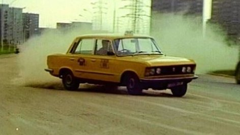

Polski Fiat 125p
Dzisiaj Duże Fiaty można spotkać przede wszystkim na wystawach zabytkowej motoryzacji. Jednak w czasach PRL był synonimem luksusu i komfortu, marzeniem większości Polaków. Wówczas był to samochód adaptowany do niemal wszystkich potrzeb: przerabiano go na karetkę pogotowia, milicyjny radiowóz, pick-up. Nazywany był „kantem”, „kredensem”, „bandziorem”. A najczęściej - dużym fiatem.
Nic zatem dziwnego, że Polski Fiat 125p występował w większości polskich filmów i seriali z lat 1970-1990. Dużym fiatem z taśmowym prędkościomierzem jeździł we wczesnych odcinkach serialu „07 zgłoś się” porucznik Sławomir Borewicz. Potem przesiadł się na poloneza. W odcinku „Hieny” dużymi fiatami ścigali się na Mazurach przestępcy.
Ale najbardziej znaną produkcją filmową, w której pojawiał się ten model fiata, był oczywiście serial "Zmiennicy" Stanisława Barei z 1986 roku, w którym żółtym fiatem 125p na zmianę jeździła tytułowa para taksówkarzy.